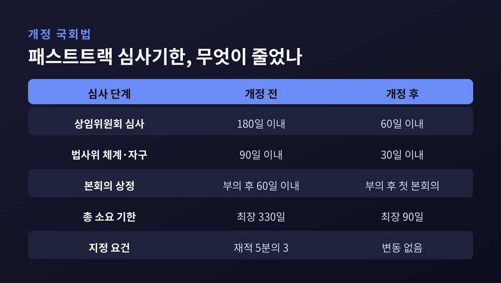
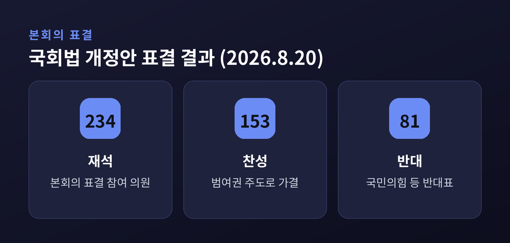
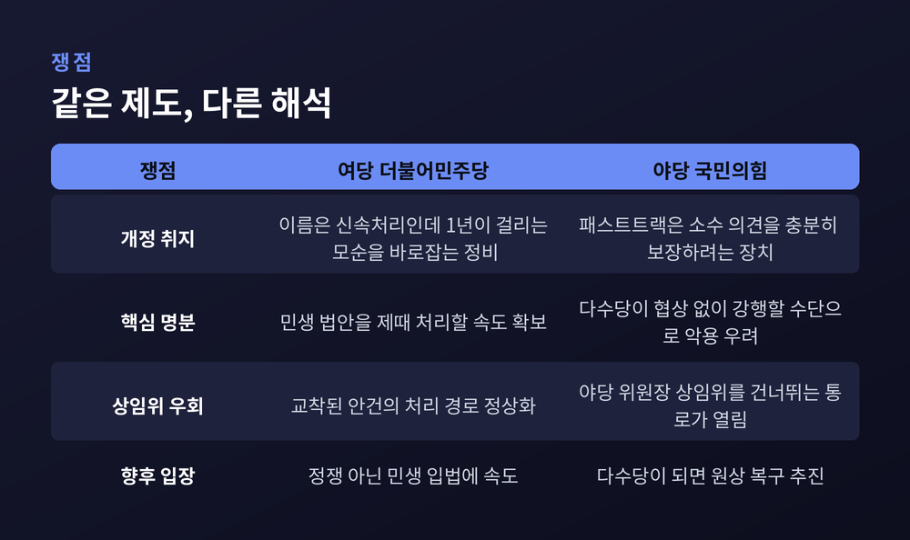
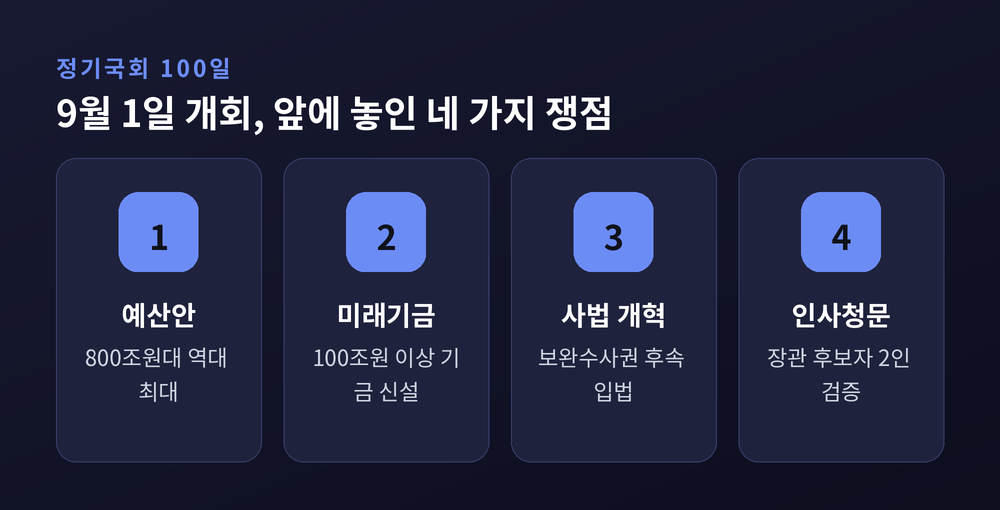

이번 글에서는 2026년 9월 1일 공포된 개정 국회법을 정리해 보겠습니다. 패스트트랙 심사 기한이 330일에서 90일로 줄었습니다. 같은 날 문을 연 100일 정기국회와 어떻게 맞물리는지까지 함께 살펴보겠습니다.
세 줄 요약
2026년 9월 1일, 청와대에서 2026년도 제38회 국무회의가 열렸습니다.
이재명 대통령이 주재한 이 회의에서 정부는 개정 국회법 공포안을 심의·의결했습니다. 핵심은 한 줄로 요약됩니다. 신속처리안건, 이른바 패스트트랙으로 지정된 안건의 심사 기한을 종전 '최장 330일 이상'에서 '90일 이상'으로 줄인다는 것입니다.
이 법은 공포 즉시 시행됐습니다.
세부 내용은 이렇습니다. 상임위원회 심사 기한이 180일에서 60일로, 법제사법위원회의 체계·자구 심사가 90일에서 30일로 줄었습니다. 본회의 상정 기한도 바뀌었습니다. 예전엔 부의된 날로부터 60일 이내였습니다. 지금은 부의 후 첫 본회의에서 곧바로 상정합니다.
다만 지정 요건 자체는 손대지 않았습니다. 국회의장은 여전히 재적의원 5분의 3 이상, 또는 상임위 재적위원 5분의 3 이상의 찬성이 있어야 안건을 패스트트랙에 올릴 수 있습니다. 문턱은 그대로 두고, 문을 통과한 뒤의 시간만 줄인 셈입니다.

이날 국무회의는 국회법만 다루지 않았습니다.
법원의 유죄 판결 없이도 범죄수익을 몰수할 수 있게 하는 '독립몰수제' 도입안, 즉 범죄수익은닉규제법 개정안 공포안도 함께 의결됐습니다.
내용은 두 갈래입니다.
첫째, 당사자가 사망했거나 국외로 도피했거나 소재를 알 수 없어 기소가 어려운 경우에도, 범죄수익임이 확인되면 검찰이 법원에 몰수·추징명령을 청구할 수 있게 됩니다.
둘째, 내란죄 등 헌정질서를 파괴하는 범죄에 대해서는 공소시효가 완성된 뒤에도 범죄수익을 몰수할 수 있습니다. 내란·외환·반란·이적죄와, 그에 기반해 직무상 지위로 저지른 뇌물·횡령·배임 범죄가 대상으로 명시됐습니다.
시행 시점은 국회법과 다릅니다. 국회법은 즉시 시행이지만, 범죄수익은닉규제법 개정안은 공포 후 1년이 지난 뒤부터 적용됩니다. 실제 작동은 2027년부터라는 뜻입니다.
이 밖에 긴급조치 피해자 구제를 위한 민사 재심 특별법안, 중대범죄수사청장을 국회 인사청문 대상에 포함하는 국회법·인사청문회법 개정안, 9·7 부동산 공급대책 후속 법률들도 이날 공포안이 통과됐습니다.
법이 하루아침에 만들어진 것은 아닙니다.
7월 28일 국회 운영위 소위에서 범여권 주도로 의결됐습니다. 국민의힘은 표결에 불참했습니다. 이튿날 운영위 전체회의도 통과했고, 국민의힘 위원들은 반대하며 퇴장했습니다.
7월 31일 본회의에 상정됐습니다. 국민의힘은 무제한토론, 곧 필리버스터로 맞섰습니다. 첫 주자는 김미애 의원이었습니다. 무소속 한동훈 의원도 신청을 예고했습니다.
그러나 7월 임시국회 회기가 종료되면서 표결은 이뤄지지 못했습니다. 국회법상 이런 경우 법안은 다음 회기 첫 본회의에 자동 상정됩니다.
그 날이 8월 20일이었습니다. 재석 234명 중 찬성 153명, 반대 81명으로 가결됐습니다.
같은 본회의에서 특별감찰관 후보 3인 선출안도 처리됐습니다. 민주당과 국민의힘, 대한변호사협회가 각각 최길수·강지식·최용훈 변호사를 추천했습니다. 대통령이 이 중 한 명을 지명하고 인사청문회를 거치면, 2016년 이석수 초대 특별감찰관 사임 이후 10년 만에 자리가 채워집니다.

이 대목은 어느 한쪽 말만 옮기면 그림이 어그러집니다. 양쪽을 나란히 놓겠습니다.
여당 측 주장. 한병도 민주당 대표 직무대행 겸 원내대표는 7월 29일 이렇게 말했습니다. "이름은 신속처리안건인데 처리까지 거의 1년이 걸리는 모순을 바로잡고, 이미 효용성을 잃은 제도를 본래 취지에 맞게 정비하기 위한 개정"이라는 것입니다. 국민이 국회에 요구하는 것은 정쟁이 아니라 민생 법안을 제때 처리하는 일이라는 설명도 덧붙였습니다. 요컨대 '신속처리'라는 이름과 330일이라는 현실 사이의 간극을 메웠다는 주장입니다.
야당 측 주장. 김승수 국민의힘 원내운영수석부대표는 7월 29일 운영위 전체회의에서 "패스트트랙은 소수 의견을 충분히 보장하려는 것"이라고 반박했습니다. 검토할 시간도 주지 않고 강행 처리한다는 비판도 함께였습니다. 정점식 원내대표는 본회의 당일 의원총회에서 "이제 국회는 민주주의 최후 보루가 아니라 이재명 독재 정권의 최첨병이 됐다"고 말했습니다. 2년 뒤 다수당이 되면 되돌릴 '악법 리스트'를 정리하겠다고도 했습니다.
야당이 우려하는 실질적 지점은 상임위 우회입니다. 개정으로 소관 상임위를 사실상 거치지 않고 본회의로 직행하는 경로가 열렸다는 관측이 나옵니다. 현재 국민의힘이 산업통상자원중소벤처기업위원회와 국토교통위원회 위원장을 맡고 있습니다. 여권이 추진하는 메가특구 특별법이나 부동산 후속 입법이 이 상임위에서 막히더라도 패스트트랙으로 넘길 수 있다는 이야기입니다.
흥미로운 것은 두 진영이 같은 근거를 든다는 점입니다. 양쪽 모두 '패스트트랙의 본래 취지'를 말합니다. 여당은 그 취지를 '신속'으로, 야당은 '소수 보호'로 읽습니다.

2012년 5월 2일로 거슬러 올라갑니다.
18대 국회 마지막 본회의에서 여야 합의로 국회선진화법이 통과됐습니다. 목적은 분명했습니다. 다수당의 일방적 국회 운영을 막고, 직권상정에서 비롯되는 물리적 충돌을 끊는 것이었습니다. 그래서 국회의장의 직권상정 요건을 크게 제한했습니다.
그런데 부작용이 생겼습니다. 직권상정이 막히자 소수당의 반대나 위원장의 상정 거부만으로 법안이 기약 없이 방치되는 일이 벌어졌습니다. 그 교착을 뚫으라고 만든 보완 장치가 바로 패스트트랙입니다.
여기에 이 제도의 이중성이 있습니다. 패스트트랙은 '다수 독주를 막는 법' 안에 들어 있는 '교착을 뚫는 장치'입니다. 지정 요건을 5분의 3, 300석 기준 180석으로 높게 잡은 것도 그래서입니다. 단순 과반으로는 쓸 수 없게 해 소수당의 동의를 유도하는 설계였습니다.
실제로 쓰인 적은 많지 않습니다. 2016년 12월 세월호 참사와 가습기 살균제 피해 진상규명을 위한 사회적 참사 특별법이 지정돼 1년 가까운 숙려를 거쳐 통과됐습니다. 유치원 회계의 투명성을 높이려는 유치원 3법도 이 경로를 탔습니다. 2019년에는 선거제 개혁안과 공수처 설치법, 검경 수사권 조정안이 지정되면서 이른바 '패스트트랙 파동'이 벌어졌고, 물리적 충돌은 형사 재판으로까지 이어졌습니다. 2023년 이른바 '쌍특검'이 역대 네 번째 사례로 기록됐습니다.
14년 동안 손에 꼽을 만큼만 쓰인 제도였습니다. 그 제도의 시계가 이번에 3분의 1 이하로 줄었습니다.
공포일과 정기국회 개회일이 같은 날이었다는 점은 그냥 넘기기 어렵습니다.
9월 1일 오후 2시, 국회는 정기국회 개회식에 이어 본회의를 열었습니다. 100일 회기입니다. 조정식 국회의장은 개회사에서 "국민께서 국회를 평가하는 기준은 '내 삶이 얼마나 달라졌냐'"라며 그 무게를 아는 시간이 되기를 당부했습니다.
앞에 놓인 쟁점은 만만치 않습니다.
첫째, 예산입니다. 내년도 예산안 규모가 800조원대입니다. 역대 최대 수준입니다. 여당은 경기 회복과 민생을 앞세워 정부 원안 통과를 목표로 잡았고, 국민의힘은 규모를 줄이는 데 무게를 두고 있습니다. 유승민 전 국민의힘 의원은 9월 3일 이를 821조원 규모로 언급하며 "수입이 200조원 넘게 늘어날 것으로 예상되는데 빚이 왜 100조원 넘게 늘어나느냐"고 물었습니다.
둘째, 미래대응기금입니다. 반도체 호황으로 늘어난 세수를 따로 적립해 AI와 첨단산업, 청년·지방·인재 육성에 투자하겠다는 구상입니다. 규모는 100조원 이상으로 거론됩니다. 박홍근 의원은 세수 변동성을 완화하는 장치라고 설명했습니다. 반대편에서는 국가재정법상 기금이 주요 항목 지출액의 20% 범위에서 국회 사전 승인 없이 정부 재량으로 변경 가능하다는 점을 지적합니다. 100조원 기금이면 국회 통제 밖의 돈이 수십조원에 이른다는 우려입니다.
셋째, 검찰·사법·경찰 개혁입니다. 앞서 7월 말 검사의 보완수사권을 폐지하는 형사소송법 개정안이 처리됐습니다. 검사를 수사 주체에서 제외하고 수사와 기소를 분리하는 것이 골자였습니다. 국민의힘 법사위원들은 "보완수사 요구는 요구일 뿐"이라며 실효성에 의문을 제기했습니다. 중대범죄수사청 초대 청장 인선도 남아 있습니다.
넷째, 인사청문회입니다. 김승원 법무부 장관 후보자와 용혜인 성평등가족부 장관 후보자 청문회가 예정돼 있습니다. 국민의힘은 "공소취소용 개각"이라며 벼르는 중입니다.

정기국회 100일과 개정된 심사기한 90일. 두 숫자가 겹칩니다. 이론상으로는 이번 회기 안에 지정부터 처리까지 한 사이클이 돌 수 있게 됐습니다. 실제로 그렇게 운용될지는 아직 알 수 없습니다.
세 가지를 보겠습니다.
첫째, 실제 지정 여부입니다. 법이 바뀌었다고 곧바로 쓰이는 것은 아닙니다. 5분의 3이라는 지정 요건은 그대로입니다. 이 회기에 실제로 패스트트랙에 오르는 안건이 나오는지, 나온다면 어떤 법안인지가 첫 시험대입니다.
둘째, 필리버스터의 위상입니다. 7월 말 필리버스터는 법안을 20일 늦추는 데 그쳤습니다. 재적 5분의 3 찬성으로 24시간 뒤 종결이 가능하고, 회기가 끝나면 다음 회기 첫 본회의에 자동 상정됩니다. 소수당에 남은 지연 수단이 어디까지 유효한지가 드러날 것입니다.
셋째, 되돌림의 가능성입니다. 야당은 다수당이 되면 원상 복구하겠다고 공언했습니다. 국회 운영 규칙이 다수 교체 때마다 바뀌는 구조가 자리 잡을지, 아니면 어느 지점에서 합의가 이뤄질지는 지켜볼 일입니다.
한 가지는 인정하고 갑시다. 어느 쪽 주장이 옳은지는 이 글에서 판정할 문제가 아닙니다. 입법이 느려 민생이 밀린다는 지적도, 견제 장치가 얇아진다는 우려도 각각 근거를 갖고 있습니다.
정리하면 이렇습니다.
2012년의 국회선진화법은 '속도를 줄여 충돌을 막자'는 합의였습니다. 2026년의 개정 국회법은 '속도를 높여 일을 하자'는 선택입니다. 14년 사이에 국회가 자기 자신에게 요구하는 미덕이 뒤바뀐 셈입니다.
남는 질문은 하나입니다 — 빨라진 국회는 더 나은 국회인가.
답은 앞으로 100일 동안 이 국회가 무엇을 처리하고 무엇을 남기는지로 채워질 것입니다. 그때 다시 이 날짜를 꺼내 보면 되겠습니다.